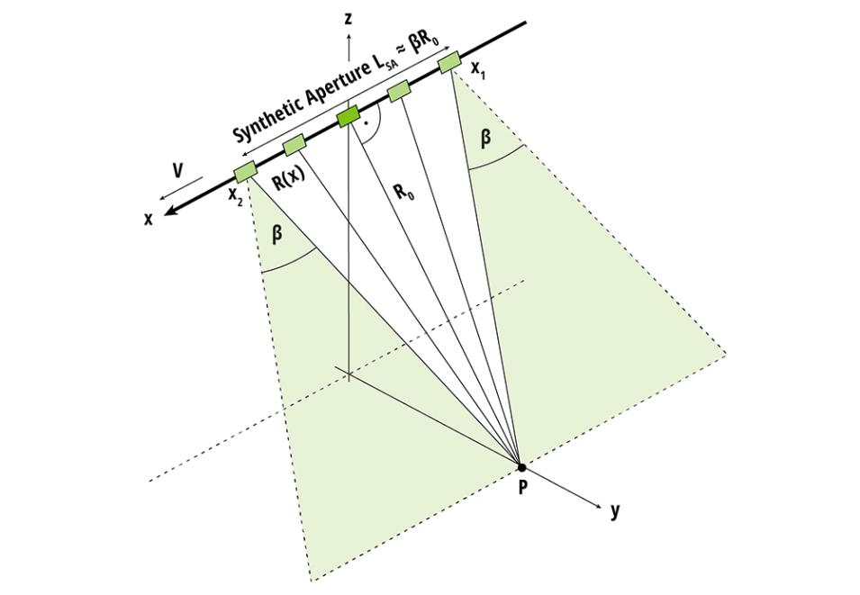
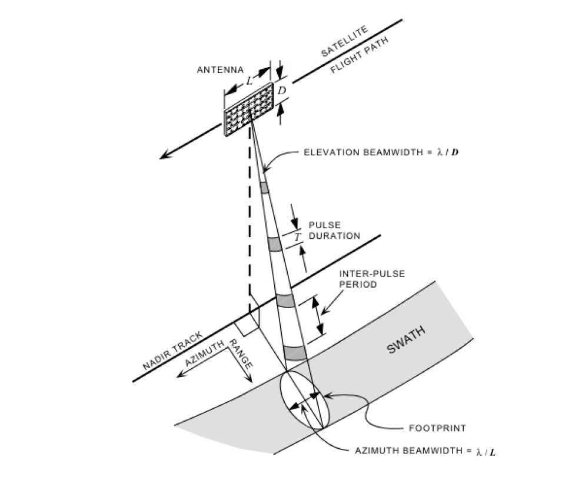
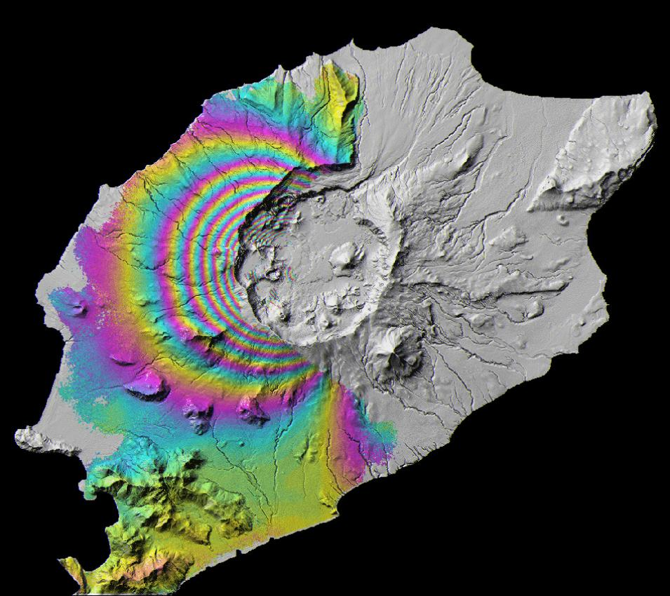

А09 · РСА · спекл · InSAR


Длина волны = глубина проникновения. HH / VV / HV — тип рассеяния.

Фаза → смещения поверхности
Конспект · NASA SAR Handbook
← → пробел — слайды
F — полный экран
N — заметки докладчика